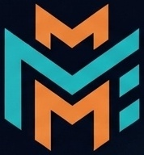
WawiERP için yeni bir yönetim paneli tasarladık. Outlet mağazasının 45 bin ürünlük kataloğundan yeni bir vitrin ve onu yöneten bir panel kurduk. İkisi de tıklanabilir, ikisi de yayında.
Aşağı kaydırın ya da ↓ / boşluk tuşunu kullanın. Görsellere tıklayınca büyür.
Eski paneli inceledik, sorunlarını çıkardık, rakiplere baktık ve yeni bir panel tasarladık.
Mağazanın kataloğunu aldık, sıfırdan bir vitrin ve Türkçe bir yönetim paneli kurduk.
02
| Konu | Eski panel | Yeni panel |
|---|---|---|
| Sipariş listesi | Aynı liste beş ayrı ekranda | Tek liste, hazır görünümler |
| Sayılar | Menüdeki sayı ile liste tutmuyor | Rozet ve liste aynı hesaptan |
| Kanal sorunları | Ancak ekranlara tek tek girince görülüyor | Kanal sağlığı ve uyarılar tek yerde |
| Eksik ürün bilgisi | 43.921 resimsiz ürün, düzeltme akışı yok | "Sıradakini düzelt" kuyruğu |
| İadeler | 79 iadenin hepsi ilk aşamada | Dört adımlı iade akışı |
| Otomasyon | Birkaç sabit kural | Olay, koşul, işlem ve onay düzeyiyle kural motoru |
| Yardım | Yok | Soru yanıtlayan ve iş hazırlayan asistan |
03
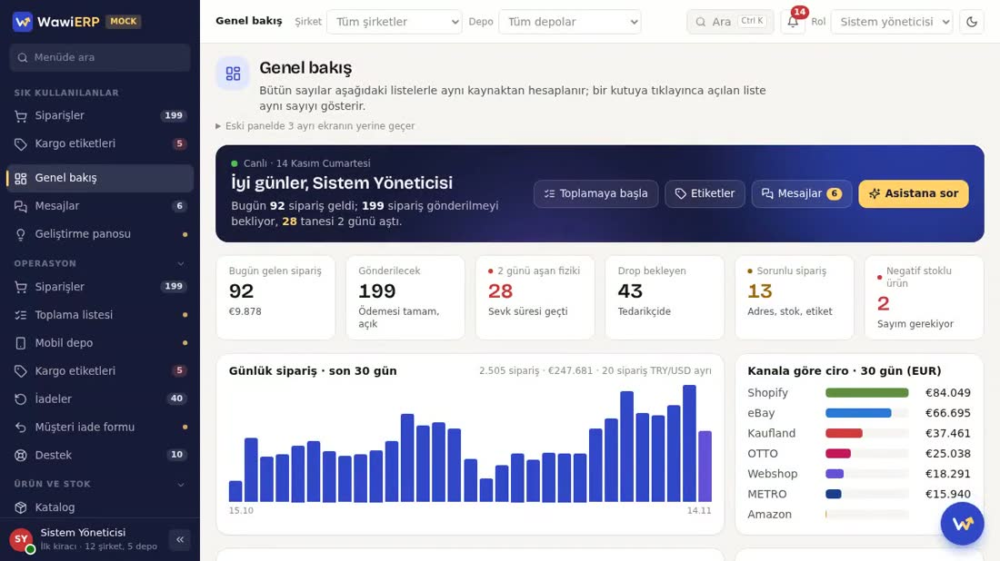
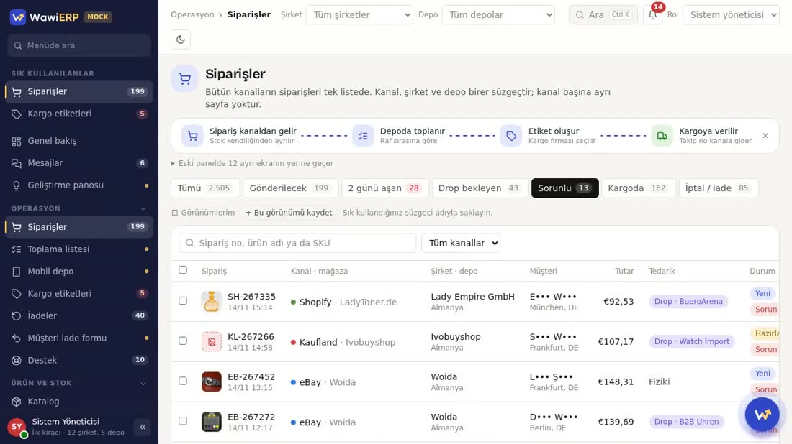
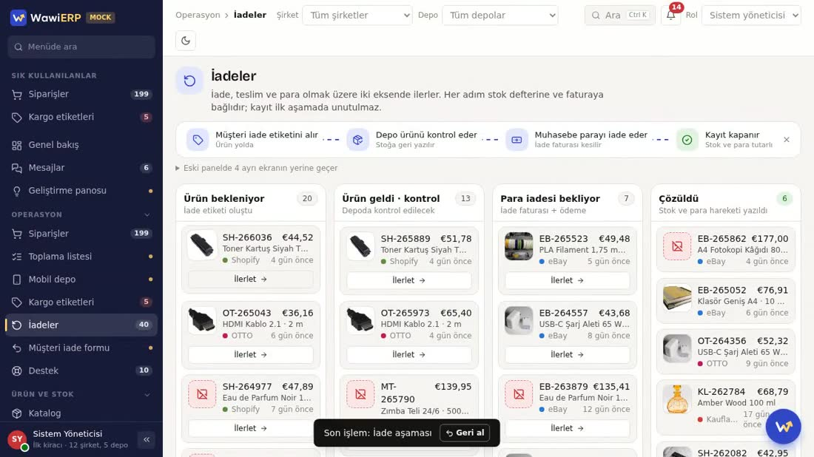
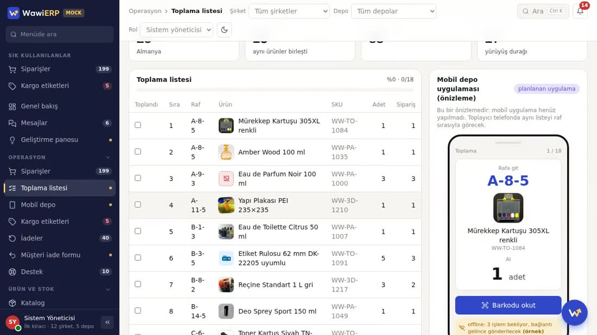
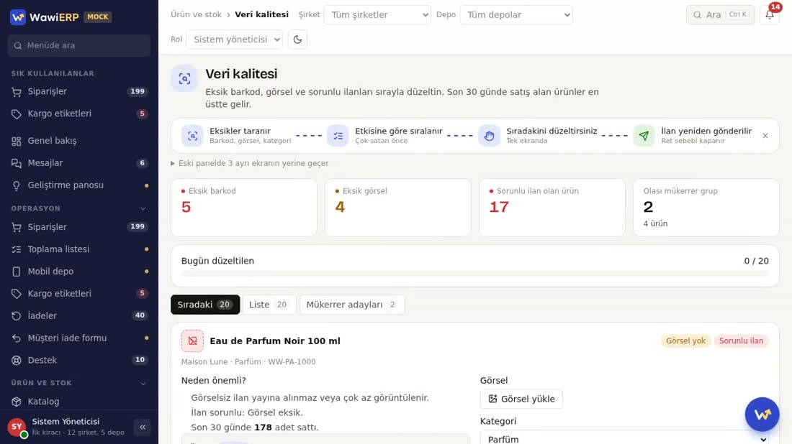
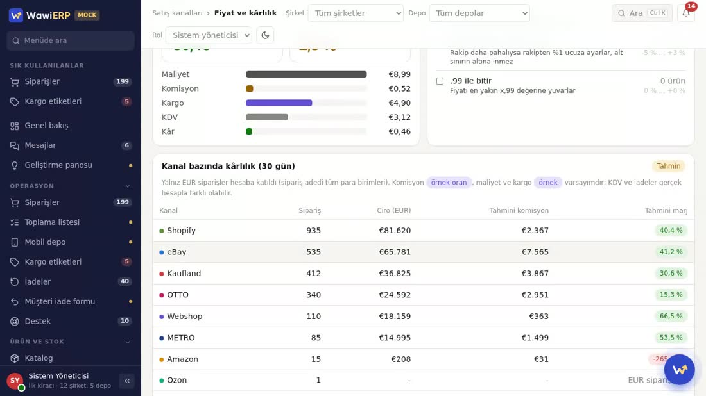
04
İstek şuydu: panel kendiliğinden "bu oldu, bu olmadı, şunu yapman lazım" desin.
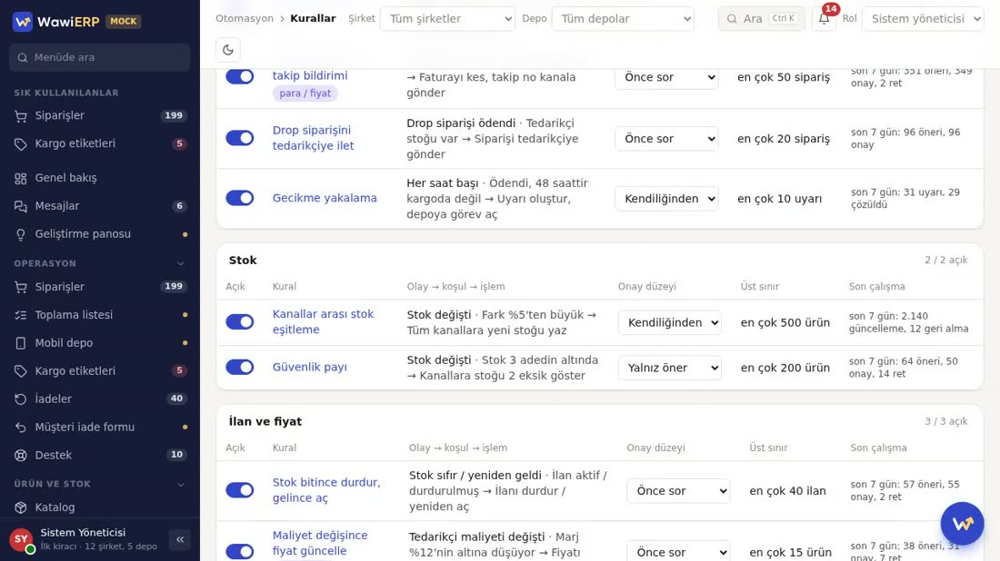
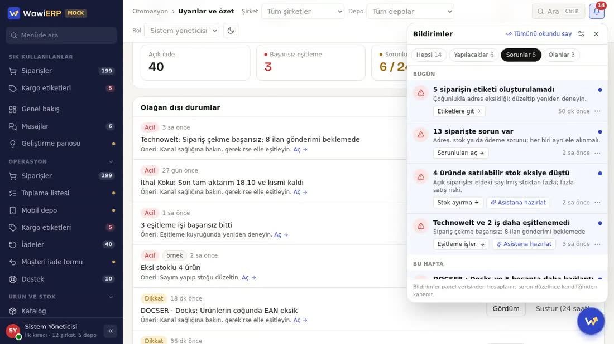
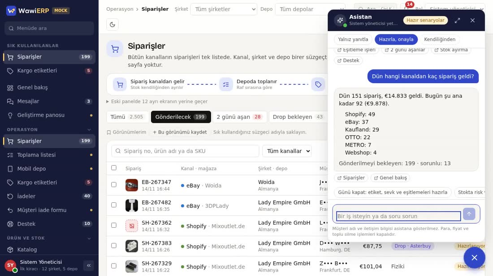
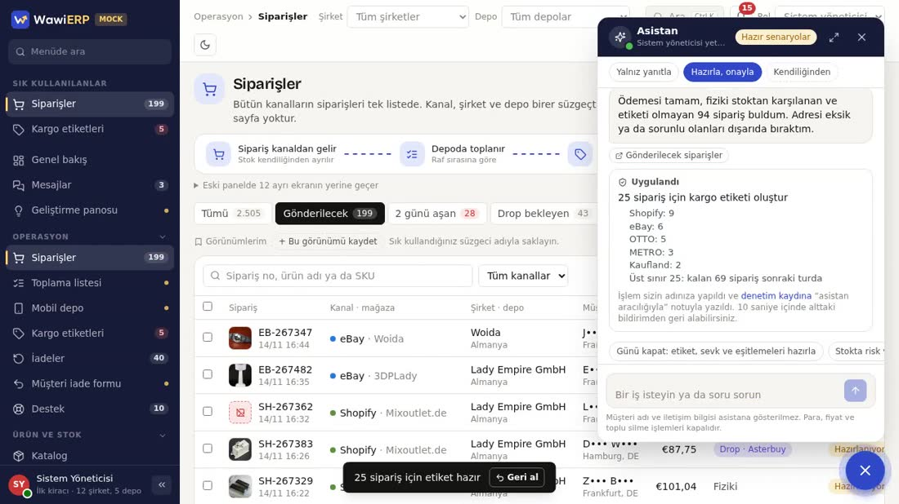
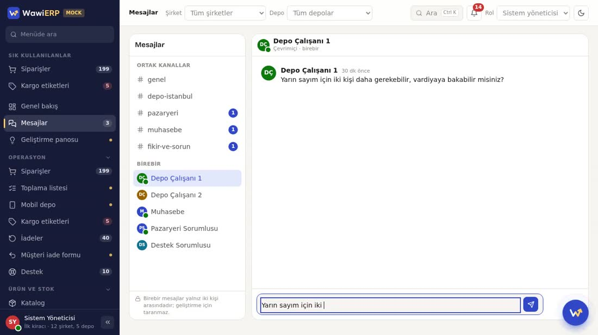
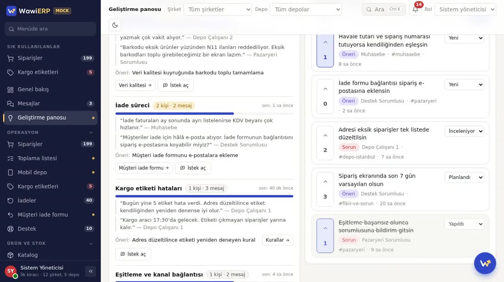
Asistanın sınırları: rolünüzün yetkisi kadar, tek seferde en fazla 25 kayıt; para, fiyat, iptal ve silme kapalı; müşteri bilgisi asistana gitmez.
05
Panelde gezerek yenilikleri anlatan, Türkçe seslendirilmiş 4 dakika 20 saniyelik video.
06
Mağazanın kataloğunu fotoğraf, fiyat, marka ve kategorileriyle aldık; sıfırdan bir mağaza arayüzü ve onu yöneten Türkçe bir panel kurduk.
07


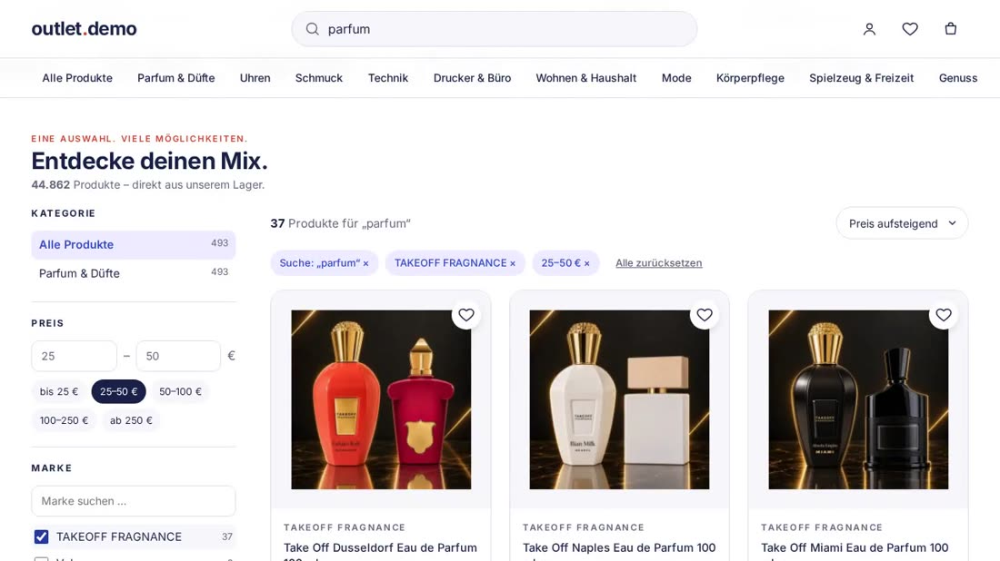


Müşteri analizi yalnız ziyaretçinin izniyle çalışır. Sahte geri sayım ve uydurma stok baskısı gibi yöntemler bilerek kullanılmadı.
08
Kutu, yalnız logo ya da yanlış ürün fotoğrafıyla satışa çıkan ürünler güveni düşürür. Hepsini taradık.
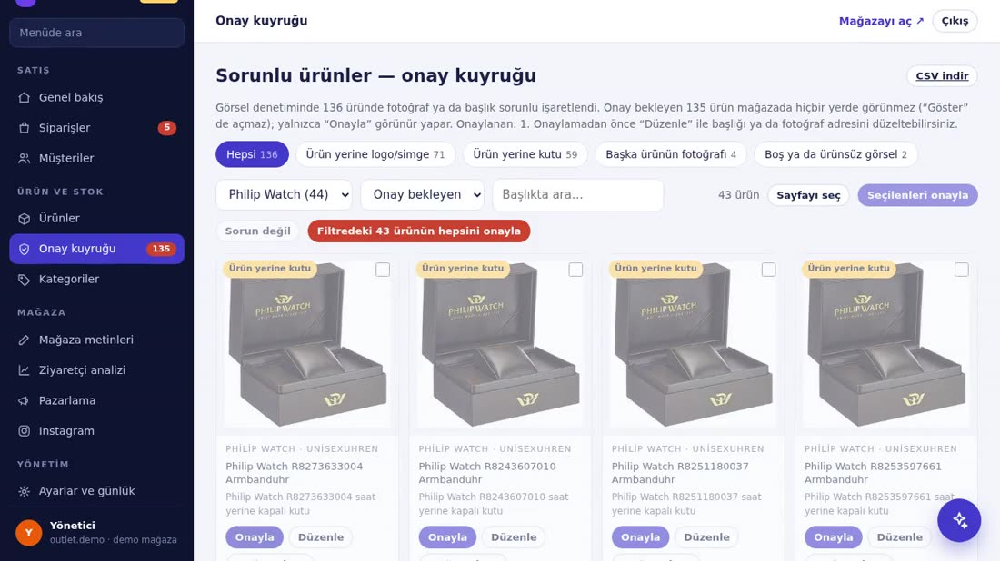
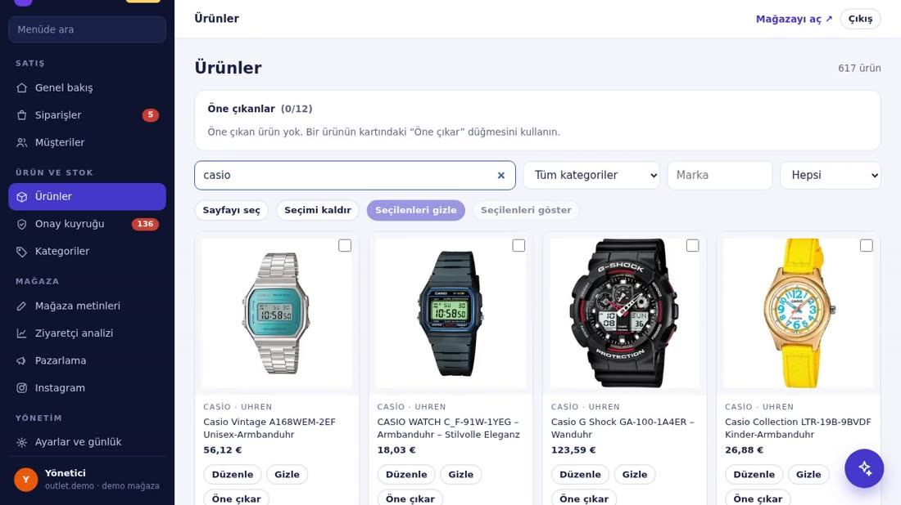

09
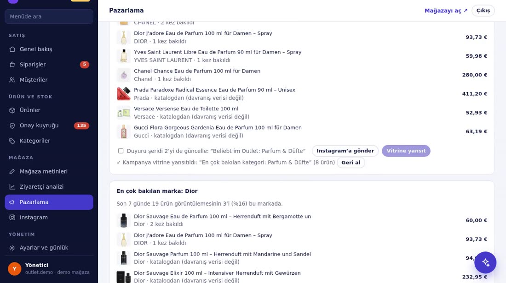


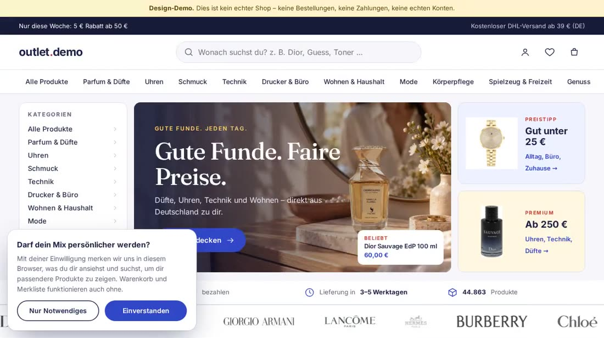


10
İkisi de Türkçe seslendirilmiştir.
11
12
| Proje | Parça | Durum | Açıklama |
|---|---|---|---|
| Wawi | Panel ekranları | Yayında | 33 ekran tıklanabilir; veriler örnek. |
| Wawi | Asistan | Canlıda bağlı | Soru yanıtladığı görüldü; iş hazırlama ve onay canlıda ayrıca denenmedi. |
| Wawi | Mesajlaşma, geliştirme panosu, benzer ürün | Taslak | Tarayıcıda çalışır; gerçek sunucuya bağlı değil. |
| Wawi | Gerçek sunucu, veritabanı, pazaryeri bağlantıları | Yok | Geliştirme eski kaynak kodun gelmesini bekliyor. |
| Outlet | Mağaza ve katalog | Yayında | Fiyat ve stok alındığı andaki hâliyle; güncellenmiyor. |
| Outlet | Yönetim paneli, onay kuyruğu | Yayında | Yerelde denendi; canlıda giriş yapılarak ayrıca denenmedi. |
| Outlet | Asistan | Denenmedi | Anahtar tanımlı; canlıda yanıt verdiği doğrulanmadı. |
| Outlet | Instagram, hatırlatmalar | Simülasyon | Gerçek hesap bağlı değil, e-posta gönderilmiyor. |
| Outlet | Sipariş, ödeme, kendi alan adı | Yok | Kasa adımı yalnız deneme siparişi oluşturur. |
13
14
İki ürün de açık: tıklayıp deneyebilirsiniz.
WawiERP ayrıntılı sunum · Outlet ayrıntılı sunum · Outlet mağaza
MAETech Digital Solutions · maetech.com.tr